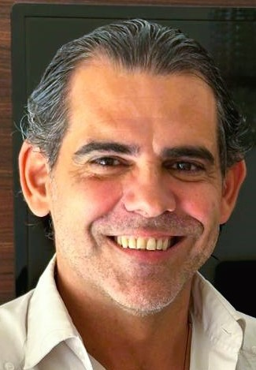

Gonzai • Emprendedor Creativo y Ecoscritor Consciente
Soy Gonzai, una identidad que nace de la síntesis entre mis estudios en Bioquímica y Logosofía, mi experiencia como fundador de centros de salud y bienestar, y una profunda curiosidad autodidacta por las neurociencias, la psicología y las filosofías.
Como emprendedor creativo y creador de Ricas Palabras, mi misión es facilitar la actualización del sistema interno de las personas. Creo que la abundancia no es algo que se persigue, sino algo que se cultiva ordenando la mente, la energía y las decisiones para crear lo que llamo el "Huevo de Oro".
A través de mi trilogía de libros y workbooks —comenzando por El Ordenador de tu Abundancia—, exploro cómo el lenguaje consciente y la escritura pueden ser herramientas de transformación real. No diseño productos que decoran; diseño objetos y experiencias que activan la Conciencia como centro energético.
🌱 Ecoscritura y Propósito: Me defino como un ecoscritor porque entiendo que cada palabra es una semilla. Mi trabajo busca generar una nueva cultura del lenguaje donde lo cotidiano se encuentre con lo simbólico para sembrar una evolución sostenible.
✨ Si estás aquí, es porque tu sistema está listo para una nueva configuración. Te invito a ser parte de esta red lumínica en expansión.